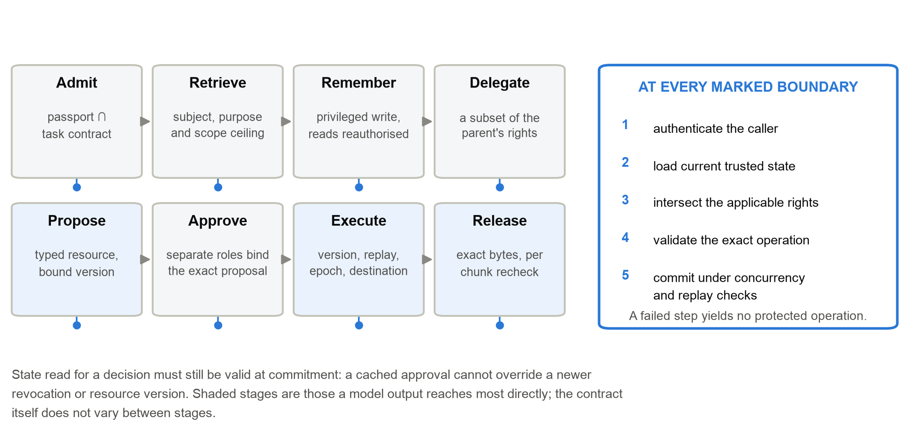
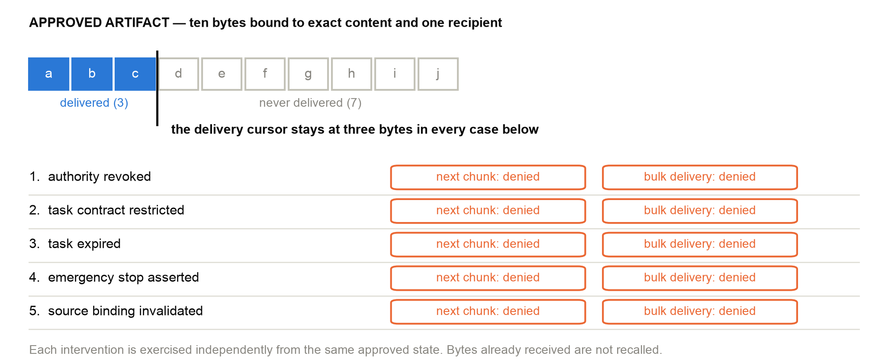
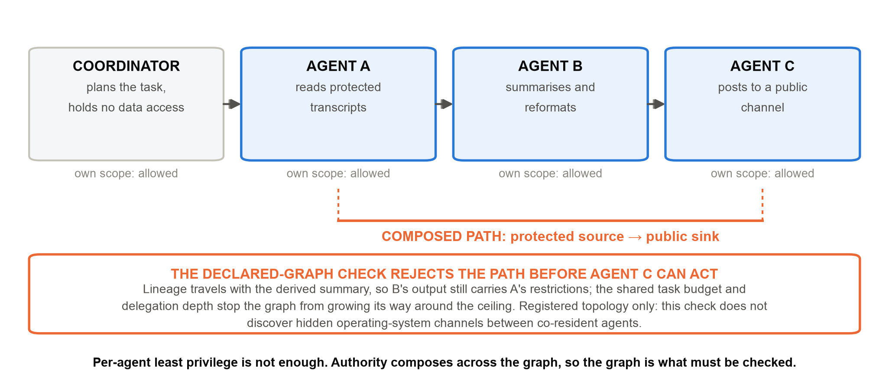
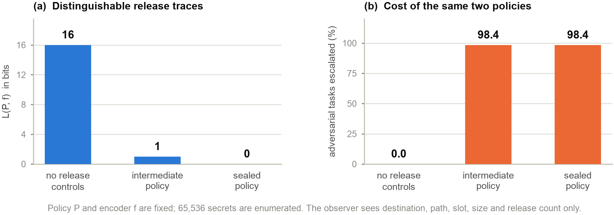

Trust by Construction for Secure Agentic Workflows in Learning Institutions
Scale intelligence without scaling implicit authority
Enterprise Architect | AI Systems Researcher
UNU Macau AI Conference 2026 — “AI × Education: AI for Learning, Learning for AI” | Artifact: github.com/genaiworks/fssai-ra
Abstract
Agentic AI can retrieve student records, retain memory, delegate work and change institutional systems. Reliable answers do not establish legitimate authority for those actions. We present Trust by Construction, an executable reference architecture that treats both the acting model and the reviewing model as untrusted components. Independently enforced task contracts constrain protected reads, state changes and disclosure; authority attenuates across delegation and is revalidated whenever an effect commits or an approved artifact is delivered. The central property is authority non-expansion: a model output may select among permitted operations or trigger a restriction, but cannot authorise an operation outside the institution's current envelope. The contribution is the composition of capability control, data lineage, independent approval, durable revocation and failure-aware delivery into one lifecycle, stated as a falsifiable invariant, with each written guarantee bound to a named executable test. We also analyse the disclosure channel that survives exact-byte approval, where an agent still chooses destination, timing, size and release count. The architecture is released under Apache-2.0 with an explicit deployment-qualification procedure that separates what the reference demonstrates from what an institution must still establish in its own environment. For learning institutions it offers an inspectable engineering basis for agent integration and a concrete way to teach the difference between model capability, legitimate authority and substantive correctness.
Keywords: agentic AI; capability security; information-flow control; education governance; reproducible systems research
1 From model risk to authority risk
A transcript assistant should retrieve the one record needed for a correction, propose the change, and release the approved result to its intended recipient. It should not reach a second student's record because a retrieved document instructs it to, approve its own proposal, or keep using a lease that an administrator revoked while delivery was in progress. The engineering question behind that small example is general: how can useful model reasoning stay available while institutional power stays independently bounded?
The stakes stopped being hypothetical in 2026, when a compromise of widely used model-hosting infrastructure drew a vendor post-mortem and an independent investigation into how the agents involved behaved, reasoned and cooperated [1–3]. The lesson generalises past that incident: wherever automation holds standing authority, one upstream compromise becomes consequential downstream action.
Trust by Construction answers by separating proposals from authority. Everything a model emits is a candidate request. Every protected read, effect and release is admitted, or refused, by an enforcement path that the model does not participate in and cannot address directly. The four contributions are as follows.
C1. A falsifiable authority invariant. Section 2 states authority non-expansion as a property over admitted transitions, names the trusted assumptions it rests on, and defines exactly what would count as a counterexample.
C2. One enforcement contract applied at every boundary that survives a model call. Section 3 gives a five-step contract and shows it holding across admission, retrieval, memory, delegation, proposal, approval, execution, delivery and emergency stopping — the boundaries where composed systems usually leak.
C3. Traceability from written guarantee to executed refusal. Section 5 maps each adversary capability to the mechanism that bounds it and to the named test that fails if the mechanism is removed, so a reader can check a claim rather than accept it.
C4. An analysis of the disclosure that exact-byte approval does not close. Section 7 measures the trace alphabet an agent retains through permitted release choices and reports the review cost of closing it.
This is an engineering and architecture contribution. It introduces no alignment algorithm, proves no general property of arbitrary agent programs, and reports no institutional deployment. Sections 6 and 10 state precisely what the supplied evidence does and does not support.
Reading map. Section 2 states the invariant and its assumptions; Section 3 gives the mechanism; Section 4 handles failure and deployment; Section 5 is the claim-to-test map; Sections 6 and 7 report bounded mechanism evidence; Sections 8 and 9 address extension, education and governance; Section 10 states limitations and the next empirical step.

System-level mitigation complements model-level safety work [4], and model-level injection resistance trained by preference optimisation [10] raises an attacker's cost without removing the need for an independent authority boundary. CaMeL separates control flow from data flow to defeat prompt injection by design [9], responding to the indirect-injection class first demonstrated against deployed LLM applications [5]; information-flow control has since been argued as the general system-level framing of that defence [13], implemented for agents in FIDES [11] and distilled into design patterns that trade some agent generality for containment [12]. AI control asks what safety remains when the model is assumed to be subverting the protocol [14]; work on anti-scheming training, chain-of-thought monitorability, insider-style misbehaviour, emergent misalignment from reward hacking, sabotage and safety-research sabotage together motivates enforcement that survives an unreliable acting or reviewing model [15–20]. Proposals for non-agentic Scientist AI address a related but distinct design question [21]. Sandboxed risk identification [22], benchmarks that plant adversarial instructions inside tool-integrated agent tasks [6,7], and the AgentSecBench and AgentDyn evaluations [23,24] measure agent security under defined task conditions. Our concern is persistent authority and failure handling across a task; we make no benchmark-ranking or head-to-head superiority claim.
Table 1. Position relative to prior work. These are differences of scope and question, not comparative performance results.
| Prior work | Established focus | What this paper examines |
|---|---|---|
| Capabilities and information flow [26–28] | Access boundaries, attenuation, lineage and independent roles | Their composition across one agent task and its failure paths |
| Injection defence by design [5,9,13] | Separating control flow from untrusted data | Persistent memory, revocation and delivery contracts |
| AI control and monitoring [14–20] | Safety when the model may be subverting the protocol | Monitoring that may restrict but never grants authority |
| Agent security evaluation [6,7,22–24] | Measured security and utility under defined tasks | Named invariant checks, without a benchmark ranking |
| Confinement [29] | Information carried by otherwise permitted behaviour | Encoder-specific release traces and their review cost |
The design is deliberately unoriginal in its primitives. It draws on complete mediation and least privilege [26], attenuated capabilities, lattice-ordered information flow [27] and its language-based successors [28], noninterference, integrity as the dual of an information-flow lattice, and separation of duty. These are credited as prior work and are not claimed here. The open engineering question is whether their composition still holds the declared boundary when an agent delegates, a monitor fails, a task is revoked mid-delivery, or an external call leaves an effect uncertain — the points at which real systems built from good primitives tend to fail.
Table 2. Core terminology, and the boundary at which each term is enforced. The implementation uses these concepts uniformly across domain profiles.
| Term | Meaning | Enforced at |
|---|---|---|
| Workload passport | The approved ceiling for a whole workload | Admission |
| Task contract | Scope and purpose of one execution | Every mediated request |
| Capability envelope | Operations currently permitted by the intersected rights | Authorisation |
| Attenuation | Delegation of a subset of existing rights, never more | Agent or service delegation |
| Lineage | Source restrictions retained through derivation | Retrieval, memory and release |
| Release escrow | Approval bound to exact bytes and one recipient | Disclosure |
| Refusal | No protected operation when any check fails | Every protected interface |
2 Threat model, assumptions and the authority invariant
2.1 Adversary and trusted base
The adversary may control model outputs, injected source content, tool descriptions and tool results, prior memory, delegated messages, and the verdict of an AI monitor. It may adapt across attempts, replay earlier requests, and select freely among operations that happen to be permitted. It is not assumed to be detectable. The resulting posture is the agent analogue of zero-trust architecture [31]: no component is trusted for its position in the system, and every request is authorised against current state.
Five assumptions bound the guarantee. They are stated so that a reader can check them against an intended deployment rather than infer them from the prose.
Table 3. Trusted assumptions. Each is a deployment obligation, not a property the reference process establishes by itself. Section 4.2 describes how the qualification procedure measures the first three, and why an unmeasurable condition is recorded as unmeasured rather than as a pass.
| Trusted assumption | Consequence if it does not hold | |
|---|---|---|
| A1 | Enforcement code and the control store are integrity-protected | Every property below it is void |
| A2 | Keys and long-lived credentials stay outside the model process | Mediation can be bypassed entirely |
| A3 | No undeclared interface reaches protected systems | Mediation is incomplete, so Property 1 is unproven |
| A4 | Operator actions are authenticated and attributable | Restoration of authority becomes an escalation path |
| A5 | Adapters preserve identity, version and destination semantics | A local approval is not the effect that actually occurs |
Compromise of anything in Table 3 is outside the evaluated guarantee. In particular, a single Python process does not isolate enforcement code from a co-resident model runtime; the reference is a specification of the enforcement path and a test harness for it, not a sandbox.
2.2 The invariant
Let s denote the trusted state at a mediation boundary: identity, policy, task contract, approvals, lineage, resource versions, revocation epoch and remaining budget. Let A(s) be the set of protected operations that this state independently permits. Let O(s,m,r) be the set of protected operations actually admitted given model proposals m and reviewer findings r.
Property 1 Authority non-expansion
O(s, m, r) ⊆ A(s) (1)
An automated restriction may shrink the effective envelope; nothing automated may widen it. Equation (1) constrains each admitted transition, with s refreshed at the boundary rather than cached from an earlier decision. It does not assert that different models produce identical outcomes: models may select different permitted requests, and a hostile monitor may deny all useful work. A counterexample is one admitted operation outside A(s), or an automated transition that widens A(s). A refusal is not a counterexample, and neither is a change of choice between two separately authorised actions.

Equation (1) is a specification, not a theorem proved for the whole implementation. The argument for it is conditional and deliberately simple: if every protected interface authenticates its caller, recomputes current authority rather than trusting a cached decision, validates the exact operation and its dependencies, and commits only under the interface's concurrency and replay checks, then model text supplies candidate requests rather than new rights. Its validity therefore rests on completeness — every protected interface, with no undeclared path around the set — and on the assumptions in Table 3. Section 5 lists the mechanism tests that attack these conditions directly through substitution, replay, revocation and control ablation, and Section 6 reports what they found.
2.3 Why the monitor cannot approve
The monitor follows a restricted integrity policy — the integrity dual of a confidentiality lattice: lower-trust advice may trigger a separately specified restriction, but may never confer approval. This intentionally permits denial of service. Restoring authority requires an authenticated operator and remains bounded by the workload's independently established ceiling, so recovery is an accountable act rather than an escalation path.
Authorisation correctness is also not semantic correctness. An authorised transcript correction may still be factually wrong, and no capability chain in this architecture claims otherwise. That separation is stated here because it is the single most common misreading of a system that produces a verifiable approval record.
3 Proof before power: enforcement across the lifecycle
The enforcement contract has five steps: authenticate the caller; load current trusted state; intersect the applicable rights; validate the exact operation and its dependencies; then commit under the interface's concurrency and replay checks. A failed check yields no protected operation. State read for a decision must still be valid at commitment — a cached approval cannot override a newer revocation or a newer resource version. This is a normative interface contract; it is not a claim that a remote effect and a local ledger share one atomic transaction. Section 4.1 gives the separate rule for remote effects.

3.1 Admission and delegation
An AI Workload Passport declares the ceiling: data classes, models, tools, processing zones, network destinations, delegation depth, budgets, permitted effects and the safe failure state. An Effect and Disclosure Inventory names every interface that can change state or release information — the enumeration that makes "complete mediation" checkable rather than aspirational. A Task Contract narrows the ceiling to one purpose, subject, resource set, destination and expiry. The effective envelope is the intersection of these declarations with current identity, lineage, ancestor scopes, policy and remaining budget.
Agents hold short-lived scoped leases rather than standing database or cloud credentials. Delegated agents receive subsets of their ancestors' authority; population caps, depth caps and a shared task budget prevent spawning from multiplying rights. A declared-graph check rejects protected-source-to-public-sink paths across cooperating agents. That check covers registered topology only: it does not discover hidden operating-system channels, and byte-based compute accounting in local adapters is a budget mechanism, not a measurement of GPU use or provider billing.
3.2 Retrieval and memory
A context gateway authorises protected retrieval before records reach the model and caps cumulative scope within a task. A memory gateway treats persistence as a privileged write and reauthorises every later read, so yesterday's authorised context is not tomorrow's standing access. Derived data retains the restrictions of its sources through summaries, handoffs, proposals and artifacts. In lattice terms, derivation must not weaken the restrictions of its inputs [27]; the same discipline appears in language-based information-flow systems as the rule that a computed value inherits the label of everything it depends on [28]. Transformation is not declassification.
An operator can quarantine an exact source binding. Tracked derivative memory, proposals and releases then become unavailable — after a service restart, and to a freshly spawned agent that never saw the original. Repair requires a new source binding. The guarantee depends on complete lineage capture, and it does not unsee information already observed or recall bytes already delivered.
3.3 Effects and approval
To change state, the model emits a typed intermediate representation: canonical resource identifiers and a desired state transition. It supplies no credentials, no free-form SQL, no shell command and no policy declaration. The executor independently revalidates caller, lease, current resource version, replay state, destination and domain invariants before committing. Source confirmation and approval bind the exact proposal rather than an open-ended instruction, which is what makes the separation of duty meaningful rather than ceremonial.
In the transcript example, the agent retrieves only the authorised record and proposes a version-bound correction. A source role confirms the supporting evidence; a different reviewer approves the proposal. If the record changes, the task expires, or authority is revoked before execution, the proposal is rejected and must be reviewed again. Capability checks establish who may act; the reviewer remains responsible for whether the correction is justified.
3.4 Disclosure and stopping
Release escrow binds approval to exact artifact bytes and to an authenticated recipient. Exact-byte binding prevents post-approval substitution. It does not establish that a human-approved artifact is truthful or free of sensitive content, and Section 7 shows what it still leaves open. Delivery rechecks recipient identity, task epoch, destination, expiry, stop state and source quarantine at every chunk boundary. Revocation denies subsequent chunks; it cannot recall bytes already committed. This is staged artifact delivery, not live model-token streaming.
One recorded trace makes the boundary concrete. The delivery test approves a ten-byte artifact and delivers three bytes. It then exercises five changes independently from that same state: revocation, contract restriction, expiry, emergency stop and source invalidation. In each case both the next chunk and a bulk-delivery attempt are denied, and the cursor remains at three bytes. The second half of that check matters as much as the first: many systems reauthorise the incremental path and leave a bulk fallback unguarded beside it.

Emergency stopping durably revokes agents, quarantines tasks and advances epochs before attempting to record evidence. An evidence-writer failure therefore cannot reverse a stop — ordering that is easy to get backwards and expensive to get wrong. Resumption requires a named operator, a new task and fresh authority. The stop controls declared service authority, not operating-system processes. Authenticated blocked attempts stay observable without letting unknown tokens grow the evidence chain.
3.5 Monitoring without approval power
A separately deployed monitor receives allowlisted metadata rather than protected text, and returns a constrained finding. It may request a restrictive transition; a clean verdict never restores a privilege. Findings bind to fresh task and global evidence heads and are rejected if forged, stale, replayed or submitted under another role. The restrictive states are RESTRICTED, PROPOSAL_ONLY, READ_ONLY and QUARANTINED.
The consequence is a deliberate asymmetry. Detector failure becomes an availability problem or a missed detection, never a new grant of authority. What this does not do is identify malicious intent inside an authorised request: a model whose harmful objective is entirely achievable within an overly broad contract remains a policy-design failure, and the architecture's answer is to make the contract narrow and legible rather than to detect the intent.
3.6 Swarms: when individually safe agents compose a prohibited path
Per-agent least privilege is not sufficient once agents cooperate. Three agents may each hold an acceptable scope — one reads authorised transcripts, one summarises, one posts to a public channel — while the composition of their scopes forms a protected-source-to-public-sink path that no single contract permits. Agent-security evaluations that vary the environment rather than the prompt report exactly this class of failure [23,24], and harmfulness benchmarks for agents show that the damaging behaviour is often assembled from individually ordinary steps [8].
The reference kernel answers at the level of the graph rather than the node. Each agent is registered with its persistent scope; lineage travels with every derived artifact, so the summariser's output still carries the restrictions of the transcript it came from; and a declared-graph check rejects a source-to-sink path before the terminal agent acts. Population caps, delegation depth and one shared task budget stop a graph from growing its way around the ceiling, because a spawned agent draws from the same allowance as its parent.

Two limits are worth stating in the same breath. The check covers the declared topology: it does not discover an undeclared channel between co-resident processes, which is a host-isolation obligation (Section 4.2, A3). And a graph whose every edge is genuinely within a single overly broad contract remains a policy-design problem, not an enforcement one.
4 Failure handling and deployment contracts
4.1 External effects and evidence
A local transaction cannot atomically commit an arbitrary remote effect; this is the uncertainty at the heart of distributed commitment. The reference ledger records intent before submission under an operation-bound key. An unacknowledged call stays uncertain and blocks dependent work rather than being blindly resubmitted. Reconciliation requires either an applied acknowledgement or an authoritative terminal absence; a pending response and an eventually consistent absence both fail to establish settlement.
The local control provides at-most-once submission within its own ledger contract. End-to-end semantics depend on the provider, exactly as an end-to-end argument predicts for a guarantee only the endpoints can complete: lookup can establish status, while deduplication or an equivalent transactional guarantee is needed to prevent duplicate application. A provider with no authoritative lookup may leave an effect permanently uncertain, and the honest system response is to say so and stop, not to retry.
Cross-service grants are signed, audience-bound, single-use and depth-limited; a receiving service intersects each grant with its own ceiling rather than honouring it as presented. Evidence chaining detects change relative to a trusted head, and independent threshold witnesses strengthen custody and expose conflicting heads. Neither signatures nor chained records make the underlying event true.
4.2 Host and transport qualification
The model must be unable to write the control database, alter enforcement code, or reach protected services outside mediation. Isolation probes inspect these assumptions and classify each required measurement as satisfied, violated or not measurable. A missing measurement is recorded as missing; it never counts as a pass. The probes are cooperative, which makes them useful for diagnosis and insufficient as adversarial testing of the intended host boundary.
Transport contracts require pinned addresses, TLS peer verification, redirect reauthorisation and byte ceilings. The implemented fetch path additionally verifies an independently approved artifact digest, because an authenticated peer does not make changed content acceptable. Tests exercise concurrent transfers, content substitution and malformed framing against a loopback TLS peer. That evidence qualifies the tested code path, and the promotion gate explicitly refuses it as evidence about an institutional network.
4.3 Tool supply and extension boundaries
Tool interfaces are increasingly described through a shared protocol [39], which makes the description itself part of the supply chain. Server-qualified tool names avoid ambiguous resolution. Approval binds the description bytes and interface the model will actually read, so description drift or a change of server identity invalidates the approval. Scanning descriptions can inform human review but cannot prove them benign, a limit that sandboxed emulation of agent tool use makes visible [22]. Privileged tool use is further restricted by the provenance of the call chain. Together these address the prompt-injection, supply-chain and excessive-agency risks in OWASP's taxonomy for agentic applications [37], and the expectations its Agent Control Standard sets out for agent deployments [38].
Deployment adapters remain trusted components. They must enforce identity, transaction boundaries, destination semantics and provider settlement contracts. Host confinement, credential custody, physical erasure and the model-training lifecycle are separate institutional responsibilities. Passing a conformance suite is evidence for specified behaviour; it is not permission to skip these obligations.
5 From written guarantee to executed refusal
The architecture's reviewability rests on one discipline: every guarantee in the prose names the mechanism that enforces it and the test that fails when the mechanism is removed. Table 4 is the compressed form of that register for the principal adversary capabilities.
Table 4. Adversary capability, the mechanism that bounds it, and the named check that fails if the mechanism is removed. The full source-bound register in the artifact carries one row per capability contract, with owner, evidence artifact and failure response.
| Adversary capability | Bounding mechanism | Named check that must fail without it |
|---|---|---|
| Injected content redirects retrieval | Context gateway authorises before records reach the model | cross-subject retrieval refused |
| Contaminated memory persists | Memory gateway reauthorises every later read | quarantine survives restart |
| Delegation multiplies rights | Attenuation with depth, population and shared budget caps | delegated scope cannot exceed ancestor |
| Forged or stale approval | Approval binds the exact proposal, version and epoch | stale approval rejected |
| Revocation during delivery | Per-chunk recheck with no bulk fallback path | stream_reauthorizes |
| Evidence writer fails during a stop | Revocation commits before evidence is attempted | stop_stays_effective |
| Hostile monitor verdict | Findings may restrict; only an operator restores | ai_monitor_can_contract |
| Lost acknowledgement on a remote effect | Intent ledger, operation-bound key, no blind retry | uncertain effect blocks dependents |
| Approved bytes carry a covert signal | Release policy removes destination, timing, size and count choice | trace-alphabet report |
A contract is a small declarative record, which is what makes the register auditable by a reviewer who does not read the implementation. Listing 1 shows one entry in full.
contract_id transcript.correction.commit
protected_asset student transcript record, authoritative store
permitted_op version-bound field correction, one subject, one task
enforcement_point executor.commit_effect - revalidates lease, resource
version, replay state, destination, domain invariants
accountable_owner registrar (an institutional role, not a service account)
failure_test tests/test_frontier_controls.py -k stale_approval_rejected
evidence_artifact audit/architecture/full-tests.xml
failure_response refuse, record the blocked attempt, require fresh reviewListing 1. One capability contract from the register. The seven fields are fixed: protected asset, permitted operation, enforcement point, accountable owner, failure test, evidence artifact and failure response. A guarantee with no failure test cannot be entered.
This is also the review protocol we propose for a deploying institution. A reviewer reads a claim, follows it to a contract, runs the named test, and observes the refusal — without trusting the authors, the prose or the model. Where a claim has no such path, it should be read as a design intention.
6 What the evidence shows, and what it does not
Evaluation uses scripted adversarial and benign fixtures — synthetic records written for the purpose — exercised over the declared interfaces. It contains no student records, no human participants and no institutional production traffic. The purpose is to test whether the enforcement mechanisms hold under specified failures — not to estimate field attack rates, deployment effectiveness or educational benefit. We state this plainly because the numbers below are easy to misread as results about the world, and they are not.
The controlled comparison runs the same scripted hostile and benign proposals through three arms: unguarded execution, a safety prompt with a tool allowlist, and the mediated architecture. No live-model compliance with the safety prompt is measured, so the middle arm characterises the configuration, not any particular model's obedience. Cross-sector scenarios exercise six configured domain profiles; they are configurations, not six institutional deployments. Ablation removes one control at a time and checks whether the associated harmful operation becomes possible. Bounded falsification searches the declared state space and says nothing about states outside it.
Table 5. Mechanism checks recorded in the reference implementation. Every row is an execution of enforcement code against scripted fixtures. Counts overlap and must never be summed; test cases and search attempts are not field attacks; none of these rows is deployment evidence.
| Mechanism check | Recorded behaviour | What the row is not |
|---|---|---|
| Controlled comparison | 0/7, then 2/7, then 7/7 hostile proposals contained | Arm configurations, not model compliance or field rates |
| Six domain profiles | 180/180 hostile contained; 58/58 benign completed | Configured profiles, not institutional deployments |
| Control ablation | Each of eight removals re-enables its harmful action | Control relevance inside those scenarios only |
| Bounded falsification | 104,997 attempts; no counterexample found | Nothing outside the declared search space |
| Recorded regression | 1,445 tests passed; 37 capability contracts executed | Source-bound local evidence, not certification |
| Monitor substitution | No tested prohibited outcome; hostile-monitor utility zero | Not an evaluation of detector quality |
| Deployment qualification | Controlled host and TLS checks recorded | Not institutional host or network evidence |
The most direct check of Property 1 is monitor substitution. An oracle monitor, a blind monitor and a hostile monitor run against the same held-out scripted trajectories. None admits the prohibited outcome the harness tests for, which is the intended asymmetry. The hostile monitor nevertheless drives retained benign utility to zero — containment and availability are different properties, and this architecture buys the first at the explicit risk of the second.
The evidence also exposes institutional limits that no test can close. A human reviewer becomes a throughput bottleneck. A reviewing assistant that shares the proposing model and evidence may repeat its substantive mistakes. Role independence, adequate review capacity and evidence quality cannot be inferred from a valid capability chain; they are organisational facts. The artifact includes an institutional study plan for measuring them, and that study has not been run.
7 What exact-byte approval does not close
Approving content leaves a channel open. An agent may still choose the destination, path, time, size and count of otherwise permitted releases; eight distinguishable destinations encode three bits per choice. This is the confinement problem [29] read through information theory, and recent work on implicit injection causing agents to leak through ordinary outbound behaviour gives it current urgency [25].
Let Z be the enumerated secret set, f the tested encoder, P a release policy and T(P,f,z) the observer's trace. We report the trace-alphabet measure
L(P, f) = log₂ |{T(P, f, z) : z ∈ Z}| (2)
For a fixed deterministic mapping, mutual information is bounded above by L(P,f); equality depends on the induced distribution over traces. The statistic is not an estimate of average leaked bits, and not an upper bound over every possible encoder. The observer sees destination, path, slot, size and release count — not payload content, network jitter or operational side channels. That restricted observation model is essential to interpreting a value of zero.

Across all 65,536 sixteen-bit secrets, the supplied encoder produces 65,536 distinct traces with no release controls, two under the intermediate policy and one under the sealed policy: L is 16, 1 and 0 bits respectively. The intermediate policy fixes destination and path, coarsens timing and pads sizes into buckets; its declared policy bound remains wider than the two traces this encoder actually reaches, so an untested encoder may exploit the remaining choice. The sealed policy additionally fixes the release count at two and collapses timing and size to one slot and one bucket, adding cover emissions within the observation model — so the final reduction cannot be attributed to release-count control alone. One trace establishes observational equivalence for these secrets, this encoder and this observer, and nothing wider; real payloads and real cover traffic would need separate validation.
Both constrained policies escalate 64,512 of 65,536 adversarial tasks, approximately 98.4 per cent, while the single benign workflow completes its two releases under every policy. That is a narrow feasibility check, not evidence that ordinary workloads retain utility. Padding, cover traffic, scheduling delay and review demand all cost something, and production bandwidth, latency and reviewer workload are not measured here. The engineering lesson is to remove unnecessary choice and then price the choice that remains, rather than treating a clean payload as proof that nothing was disclosed.
8 How to extend the reference
The public SDK exposes context, capability, tool, memory, proposal and release operations, plus separate operator and recipient interfaces. The shortest path to a working integration is one bounded workflow. An institution should first name its authoritative records, its permitted purpose, its reviewer roles, its delivery destination and its failure response. Domain packs parameterise those choices; they do not substitute for institutional policy analysis.
An extension produces four reviewable artifacts. A domain profile declares subjects, resources, purposes, tools, effects and budgets. A capability contract — the record in Listing 1 — binds the protected asset to an enforcement point, an owner and a failure test. An adapter maps the institution's real service onto that contract, including versions, retries, uncertainty and identity. A claim entry links the written guarantee to named tests and generated evidence.
Adding a scholarship decision workflow, for instance, requires a decision resource and its permitted transition, independently defined approval roles, and tests for cross-student access, stale approval, replay and revocation before delivery. That is a proposed recipe, not an evaluated deployment. A new declaration can reuse the existing primitives; a genuinely new enforcement mechanism requires core changes and a renewed review of the invariant, because Property 1 holds only over interfaces that actually run the contract. Extensibility here is a defined procedure with a verification burden, not a promise that future controls drop in for free.
Test benign completion and refusal together, then the cross-boundary cases: delegation followed by revocation, source quarantine after approval, and a lost acknowledgement after external submission. Those combinations test composition, which is where systems assembled from individually correct checks fail. Add deployment evidence only after testing against the institution's own host, transport and service semantics.
9 Relevance to AI × Education and sustainable development
For AI for Learning, the architecture makes access and intervention in student workflows inspectable rather than inferred. Contextual integrity supplies the underlying principle [30]: a record's appropriate flow depends on the context it came from, not merely on whether some party holds a key. Task contracts encode exactly that — purpose, subject, destination and expiry travel with the authority. Student records carry statutory expectations of this kind, such as the access and disclosure rules of FERPA in the United States [43]; we note the correspondence and claim no legal conclusion.
For Learning for AI — the second half of this conference's own framing [46] — the transcript example supports a practical exercise. Learners compare a valid correction against forged approval, contaminated memory and a misleading monitor, and observe why each is refused. The objective is to separate fluent reasoning, source validity, legitimate authority and correct decisions — four things that novice and expert users alike tend to collapse into "the AI said so". This addresses competencies that UNESCO's framework for students places at the centre of AI literacy [42]. No measured learning improvement is claimed.
The governance mapping is specific rather than decorative. Task contracts record scope and responsibility; test and refusal evidence supports risk measurement; revocation and recovery support operational response. Standards work on agent identity and authorisation is converging on the same requirement from the infrastructure side, treating an agent's authority as issued, scoped and revocable rather than inherited from a human session [33–35]. These artifacts can contribute to the GOVERN, MAP, MEASURE and MANAGE functions of the NIST AI RMF [32], and to the documented controls and continual-improvement obligations of an AI management system under ISO/IEC 42001 [36]. The EU AI Act identifies specified educational uses in Annex III and addresses record-keeping and human oversight among other matters [40]. Applicability depends on the use case and legal scope; neither passing tests nor adopting this architecture establishes conformity.
UNESCO's guidance for generative AI foregrounds human agency, inclusion and institutional capacity [41], and the Global Digital Compact commits member states to interoperable governance and capacity-building for AI in the public interest [44]. SDG 4 supplies the wider objective of inclusive, equitable education [45]. Offline execution and openly licensed interfaces may lower the cost of inspecting and adapting a reference implementation, which matters most where procurement budgets and external assurance are thinnest. That cost reduction is a design intention: reduced cost and equitable access have not been measured, and this work makes no digital-public-good certification claim.
10 Limitations and the next empirical step
The limitations are substantive and worth stating without hedging. The implementation trusts its own enforcement components and service state (Table 3). No live frontier-model detector, adversarial host-isolation study or production deployment is evaluated. No general noninterference proof, comparative performance study, fairness result or student-outcome study is supplied. Strict controls will deny useful work, as the hostile-monitor arm shows directly. Correct authorisation still permits an incorrect institutional decision. The release-channel result holds for one encoder under one observation model, and a wider observer would see more.
The next empirical step is therefore not another test suite. It is a separately governed institutional pilot on one bounded workflow, measuring task completion, refusal reasons, reviewer burden and subgroup outcomes under a fixed analysis plan agreed before data collection. The architecture is built so that such a pilot can be run without trusting its authors: the contracts are declarative, the refusals are reproducible, and the claim register names what to check.
11 Conclusion
Trust by Construction makes institutional authority an independently checked condition of agent action rather than a property inferred from model behaviour. Its technical contribution is the composition of bounded delegation, lineage, approval, revocation and failure-aware delivery under one enforcement contract and one falsifiable invariant, with each written guarantee bound to an executable refusal. It is equally clear about what it does not establish, and it draws the line between local mechanism evidence and deployment assurance explicitly, because that line is where systems like this are usually oversold. Learning institutions can use the separation twice over: to engineer agent integrations they can inspect, and to teach why a more capable model must never quietly acquire more power to read, change or disclose a student's record.
Scale intelligence. Bound authority. Preserve lineage. Verify continuously. Recover safely.
Artifact availability and reproduction
The Apache-2.0 reference implementation is at https://github.com/genaiworks/fssai-ra; begin with DEVELOPER_GUIDE.md. Install the declared development dependencies, then run python -m pytest, python scripts/check_tbc_alignment.py, python scripts/check_architecture.py and python scripts/generate_results.py --check. The full repository check is make all; make covert-channels regenerates the release-choice report of Section 7. No model weights, GPU or real student data are required; the TLS tests need loopback sockets only.
For the principal failure checks, run python -m pytest tests/test_frontier_controls.py. Within that file the pytest -k selectors “stream_reauthorizes”, “stop_stays_effective” and “ai_monitor_can_contract” exercise, respectively, the five delivery interventions of Figure 4, evidence-writer failure during an emergency stop, and rejection of monitor-driven restoration. The source-bound claim register supplies the wider claim-to-test mapping summarised in Table 4. Table 5 reports recorded full-suite evidence; these local checks qualify code paths and do not qualify an institutional deployment.
References
[1] Hugging Face (2026). Security Incident Disclosure - July 2026. Hugging Face. https://huggingface.co/blog/security-incident-july-2026
[2] OpenAI (2026). The Hugging Face Incident and the Road Ahead. OpenAI. https://openai.com/index/hugging-face-incident-and-the-road-ahead/
[3] METR and Redwood Research (2026). Brief Independent Investigation of Agents' Behavior, Reasoning and Collaboration in the OpenAI and Hugging Face Hacking Incident. METR.
[4] R. Shah et al. (2025). An Approach to Technical AGI Safety and Security. arXiv preprint 2504.01849. https://arxiv.org/abs/2504.01849
[5] K. Greshake et al. (2023). Not What You've Signed Up For: Compromising Real-World LLM-Integrated Applications with Indirect Prompt Injection. ACM Workshop on Artificial Intelligence and Security (AISec), pp. 79-90. https://doi.org/10.1145/3605764.3623985
[6] Q. Zhan, Z. Liang, Z. Ying and D. Kang (2024). InjecAgent: Benchmarking Indirect Prompt Injections in Tool-Integrated Large Language Model Agents. Findings of the Association for Computational Linguistics: ACL 2024. https://arxiv.org/abs/2403.02691
[7] E. Debenedetti et al. (2024). AgentDojo: A Dynamic Environment to Evaluate Prompt Injection Attacks and Defenses for LLM Agents. Advances in Neural Information Processing Systems (Datasets and Benchmarks). https://arxiv.org/abs/2406.13352
[8] M. Andriushchenko et al. (2025). AgentHarm: A Benchmark for Measuring Harmfulness of LLM Agents. International Conference on Learning Representations (ICLR). https://arxiv.org/abs/2410.09024
[9] E. Debenedetti et al. (2025). Defeating Prompt Injections by Design. arXiv preprint 2503.18813. https://arxiv.org/abs/2503.18813
[10] S. Chen et al. (2025). SecAlign: Defending Against Prompt Injection with Preference Optimization. arXiv preprint 2410.05451. https://arxiv.org/abs/2410.05451
[11] M. Costa et al. (2025). Securing AI Agents with Information-Flow Control. arXiv preprint 2505.23643. https://arxiv.org/abs/2505.23643
[12] L. Beurer-Kellner et al. (2025). Design Patterns for Securing LLM Agents against Prompt Injection. arXiv preprint 2506.08837. https://arxiv.org/abs/2506.08837
[13] F. Wu, E. Cecchetti and C. Xiao (2024). System-Level Defense against Indirect Prompt Injection Attacks: An Information Flow Control Perspective. arXiv preprint 2409.19091. https://arxiv.org/abs/2409.19091
[14] R. Greenblatt, B. Shlegeris, K. Sachan and F. Roger (2024). AI Control: Improving Safety Despite Intentional Subversion. International Conference on Machine Learning (ICML). https://arxiv.org/abs/2312.06942
[15] B. Schoen et al. (2025). Stress Testing Deliberative Alignment for Anti-Scheming Training. arXiv preprint 2509.15541. https://arxiv.org/abs/2509.15541
[16] T. Korbak et al. (2025). Chain of Thought Monitorability: A New and Fragile Opportunity for AI Safety. arXiv preprint 2507.11473. https://arxiv.org/abs/2507.11473
[17] A. Lynch et al. (2025). Agentic Misalignment: How LLMs Could Be Insider Threats. arXiv preprint 2510.05179. https://arxiv.org/abs/2510.05179
[18] M. MacDiarmid et al. (2025). Natural Emergent Misalignment from Reward Hacking in Production RL. arXiv preprint 2511.18397. https://arxiv.org/abs/2511.18397
[19] J. Kutasov et al. (2025). SHADE-Arena: Evaluating Sabotage and Monitoring in LLM Agents. arXiv preprint 2506.15740. https://arxiv.org/abs/2506.15740
[20] R. Kirk et al. (2026). Evaluating Whether AI Models Would Sabotage AI Safety Research. arXiv preprint 2604.24618. https://arxiv.org/abs/2604.24618
[21] Y. Bengio et al. (2025). Superintelligent Agents Pose Catastrophic Risks: Can Scientist AI Offer a Safer Path? arXiv preprint 2502.15657. https://arxiv.org/abs/2502.15657
[22] Y. Ruan et al. (2024). Identifying the Risks of LM Agents with an LM-Emulated Sandbox. International Conference on Learning Representations (ICLR). https://arxiv.org/abs/2309.15817
[23] F. Alpay and T. Alpay (2026). AgentSecBench: Measuring Prompt Injection, Privacy Leakage, and Tool-Use Integrity in LLM Agents. arXiv preprint 2605.26269. https://arxiv.org/abs/2605.26269
[24] H. Li et al. (2026). AgentDyn: Are Your Agent Security Defenses Deployable in Real-World Dynamic Environments? arXiv preprint 2602.03117. https://arxiv.org/abs/2602.03117
[25] Q. Lan et al. (2026). Silent Egress: When Implicit Prompt Injection Makes LLM Agents Leak Without a Trace. arXiv preprint 2602.22450. https://arxiv.org/abs/2602.22450
[26] J. H. Saltzer and M. D. Schroeder (1975). The Protection of Information in Computer Systems. Proceedings of the IEEE, 63(9):1278-1308. https://doi.org/10.1109/PROC.1975.9939
[27] D. E. Denning (1976). A Lattice Model of Secure Information Flow. Communications of the ACM, 19(5):236-243. https://doi.org/10.1145/360051.360056
[28] A. Sabelfeld and A. C. Myers (2003). Language-Based Information-Flow Security. IEEE Journal on Selected Areas in Communications, 21(1):5-19. https://doi.org/10.1109/JSAC.2002.806121
[29] B. W. Lampson (1973). A Note on the Confinement Problem. Communications of the ACM, 16(10):613-615. https://doi.org/10.1145/362375.362389
[30] H. Nissenbaum (2004). Privacy as Contextual Integrity. Washington Law Review, 79(1):119-158.
[31] National Institute of Standards and Technology (2020). Zero Trust Architecture. NIST SP 800-207. https://doi.org/10.6028/NIST.SP.800-207
[32] National Institute of Standards and Technology (2023). Artificial Intelligence Risk Management Framework (AI RMF 1.0). NIST AI 100-1. https://doi.org/10.6028/NIST.AI.100-1
[33] National Institute of Standards and Technology, Center for AI Standards and Innovation (2026). AI Agent Standards Initiative. NIST. https://www.nist.gov/news-events/news/2026/02/announcing-ai-agent-standards-initiative-interoperable-and-secure
[34] NIST National Cybersecurity Center of Excellence (2026). Accelerating the Adoption of Software and Artificial Intelligence Agent Identity and Authorization. Initial Public Draft.
[35] J. Riggs et al. (2026). Summary Analysis of Responses Regarding Security Considerations for AI Agents. NIST Trustworthy and Responsible AI 800-5.
[36] International Organization for Standardization (2023). Information Technology - Artificial Intelligence - Management System. ISO/IEC 42001:2023. https://www.iso.org/standard/81230.html
[37] OWASP GenAI Security Project (2025). OWASP Top 10 for Agentic Applications for 2026. OWASP Foundation. https://genai.owasp.org/
[38] OWASP GenAI Security Project (2026). Agent Control Standard. OWASP Foundation. https://genai.owasp.org/
[39] Anthropic (2025). Model Context Protocol Specification. Open specification. https://modelcontextprotocol.io/specification
[40] European Parliament and Council (2024). Regulation (EU) 2024/1689 Laying Down Harmonised Rules on Artificial Intelligence. Official Journal of the European Union. https://eur-lex.europa.eu/eli/reg/2024/1689/oj/eng
[41] UNESCO (2023). Guidance for Generative AI in Education and Research. UNESCO, Paris. https://unesdoc.unesco.org/ark:/48223/pf0000386693
[42] UNESCO (2024). AI Competency Framework for Students. UNESCO, Paris. https://unesdoc.unesco.org/ark:/48223/pf0000391105
[43] United States Congress (1974). Family Educational Rights and Privacy Act. 20 U.S.C. 1232g; 34 CFR Part 99.
[44] United Nations General Assembly (2024). Global Digital Compact. Annex I to Resolution A/RES/79/1, Pact for the Future. https://www.un.org/global-digital-compact
[45] United Nations General Assembly (2015). Transforming Our World: The 2030 Agenda for Sustainable Development. Resolution A/RES/70/1. https://sdgs.un.org/2030agenda
[46] United Nations University Macau (2026). UNU Macau AI Conference 2026. United Nations University. https://unu.edu/macau/aiconf2026